Our Health Programs
Our comprehensive health programs address community needs through evidence-based interventions and sustainable solutions.

The goal is to increase knowledge and change behaviors.
- Health talks on hygiene, nutrition, sexual and reproductive health
- School-based health clubs
- Door-to-door health education
- Community dialogues on cultural practices affecting health (e.g., early marriage, early pregnancies, FGM in some regions)
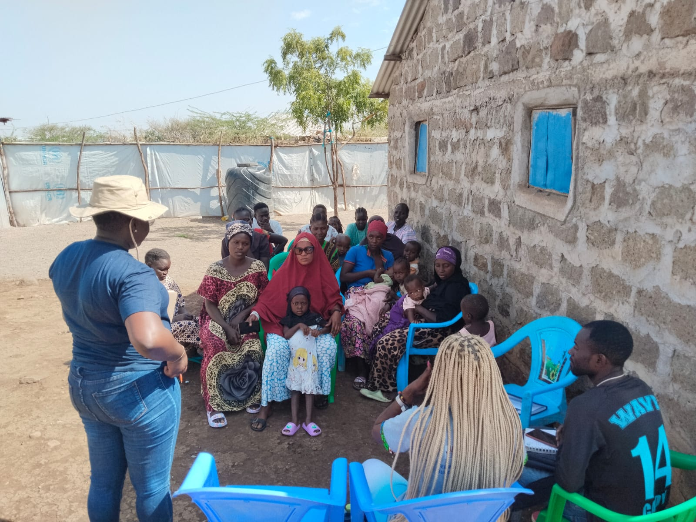
Reducing maternal and infant mortality.
- Home-based ANC follow-ups
- Encouraging skilled birth attendance
- Immunization campaigns
- Distribution of mosquito nets to pregnant women and children
Nutrition Outreach Programs
Especially in areas with food insecurity.
- Screening children for malnutrition using MUAC
- Providing ready-to-use therapeutic foods (RUTF)
- Educating mothers on breastfeeding and complementary feeding
c) Maternal and Neonatal Health Interventions
Four key intervention areas for maternal and neonatal health.
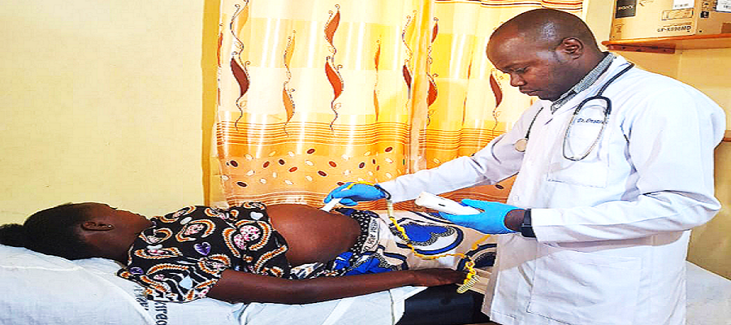
- Distribution of safe delivery kits
- Training of Traditional Birth Attendants (TBAs) on referrals
- Mobile ultrasound services
- Community transport systems for emergencies (motorbike ambulances)
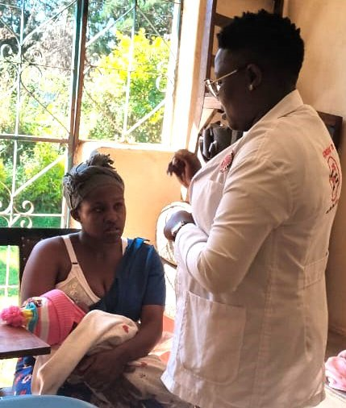
- Blanket supplementary feeding programs
- Community gardens
- Cash-transfer programs to improve household food security
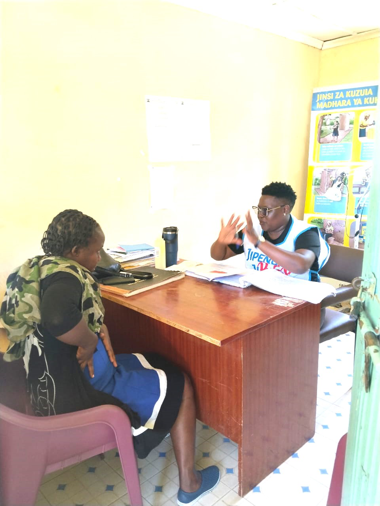
Especially in conflict-affected areas:
- Community counseling groups
- Training CHWs in psychological first aid
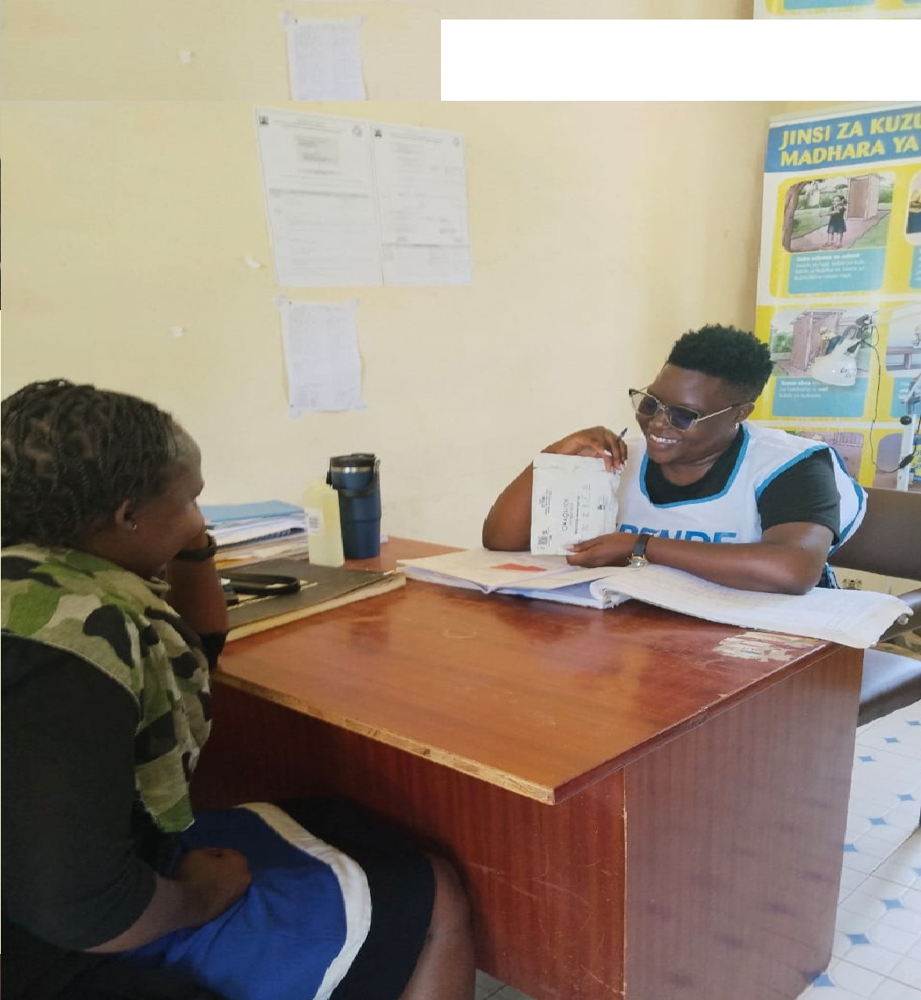
Root Causes:
- Poverty and Economic Vulnerability
- Lack of Sexual and Reproductive Health Education
- Cultural Norms and Gender Inequalities
- Peer Pressure and Social Influence
- Sexual Violence and Coercion
- Limited Access to Youth-Friendly Services
Health Risks and Social Consequences of Early Pregnancy
Health Risks Include:
- Obstetric complications (obstructed labor, fistula)
- Higher risk of maternal death
- Anemia and malnutrition
- Higher rates of unsafe abortions
Social Consequences:
- School dropout
- Stigma and discrimination
- Forced early marriage
Our Prevention and Response Strategy
- Comprehensive Sexuality Education (CSE)
- Youth-Friendly Health Services
- Community Sensitization and Dialogue
- Empowerment and Economic Support Programs
- Multi-sectoral Collaboration
- Prevention and Response to Gender-Based Violence
These interventions have impacted positively in the communities we serve.
Rehabilitation Services for Children Living with Disabilities
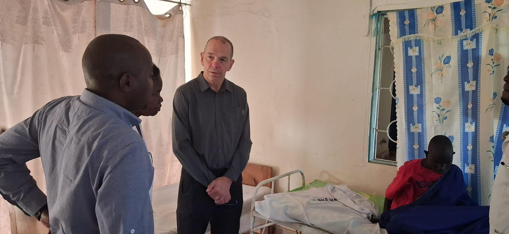
Rehabilitation helps children develop independence and functional skills. Health centres can offer or link families to:
- Physiotherapy
- Occupational Therapy
- Speech and Language Therapy
- Audiology & Vision Support
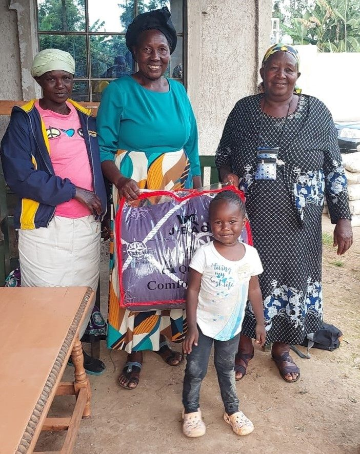
Health centres play a major role in empowering parents by providing:
- Counselling and emotional support after diagnosis
- Training caregivers on feeding, positioning, hygiene, seizure management, and home exercises
- Support groups for parents of children with disabilities
Educated caregivers improve the child's outcomes and reduce caregiver stress.
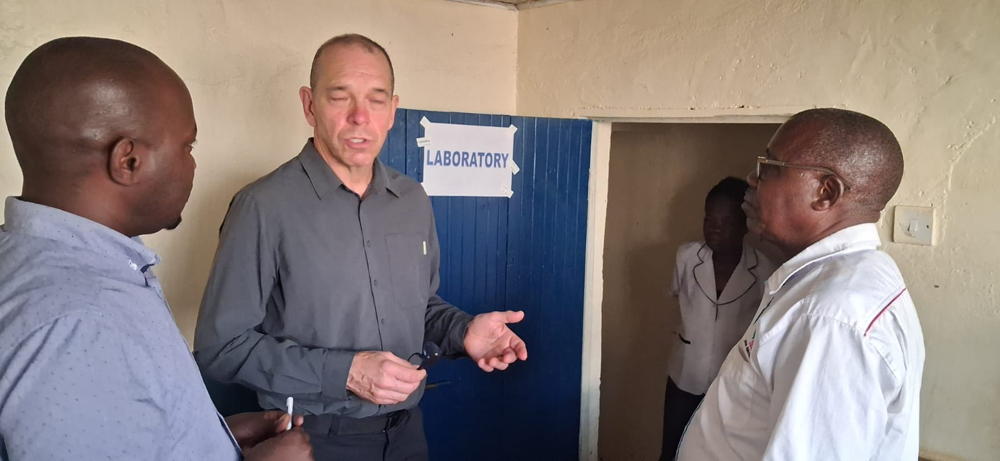
In many low-resource settings, health centres work with community health volunteers (CHVs) to deliver services at home.
CBR includes:
- Home-based physiotherapy exercises
- Teaching parents how to stimulate the child's development
- Identifying environmental barriers
- Encouraging school attendance and social inclusion
CBR is cost-effective and reaches families who cannot visit clinics frequently.
Referrals and Linkages
Health centres connect families with essential services and resources for comprehensive care.
Health centres connect families with:
- Specialized hospitals
- Rehabilitation centres
- Orthopaedic workshops
- Special needs schools
- Social welfare offices
- NGOs providing assistive devices
A strong referral pathway ensures children receive comprehensive care.
Community Health Projects to Uplift Communities and Improve Healthcare Access
In many communities—particularly rural areas—people face long distances, poor roads, high transport costs, and limited health facilities. Community health projects aim to bring healthcare closer to the people, reduce barriers, and improve overall wellbeing.
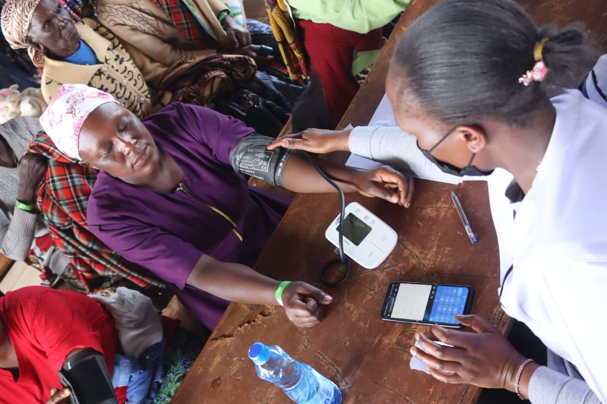
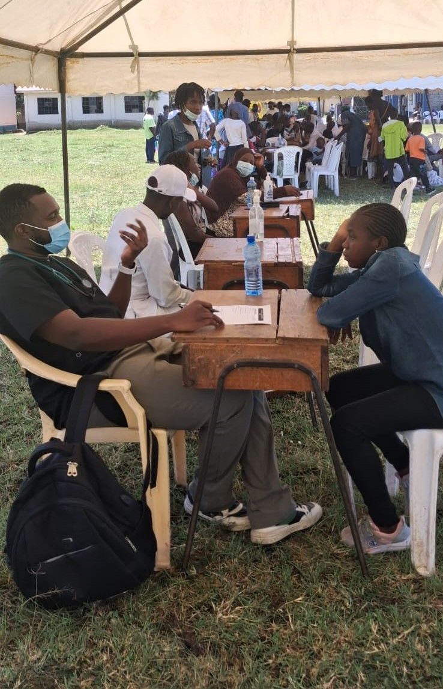
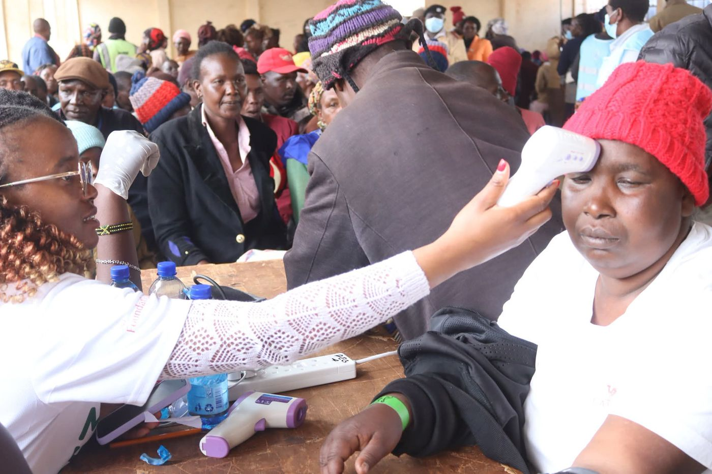
- Bringing services closer to homes
- Reducing transport costs and time
- Preventing diseases through education
- Ensuring early treatment through CHVs
- Providing continuous care for chronic patients
- Strengthening trust between community and health workers
- Improving maternal and child health
These interventions create a self-reliant, healthy, and empowered community with strong access to healthcare.
Health Targets
Reduce Teenage Pregnancies Maternal Mortality
Working to reduce maternal deaths through improved healthcare access and quality prenatal and postnatal care.
encourage self reliance on children living with disabilities.
Improve Child Nutrition
Ensuring children receive adequate nutrition through school feeding programs and nutrition education.
Increase Health Literacy
Empowering communities with knowledge to make informed health decisions and seek appropriate care.